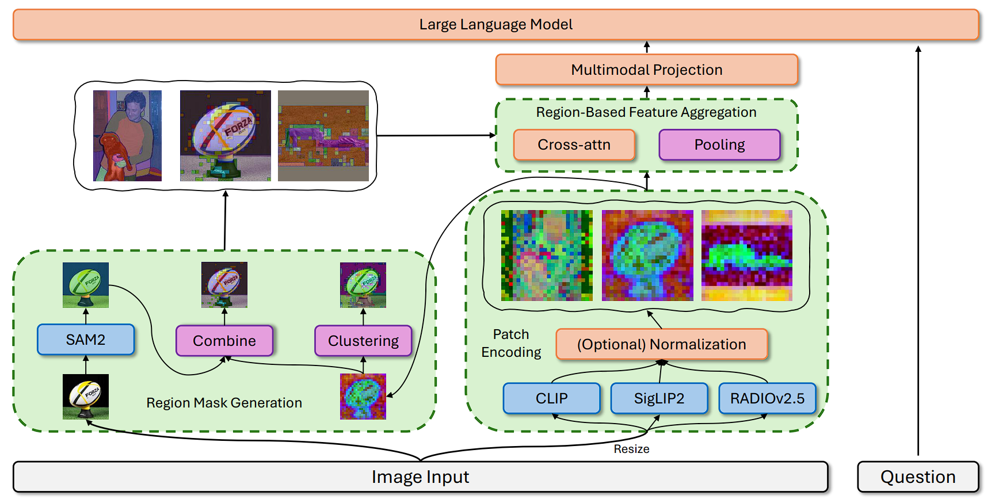
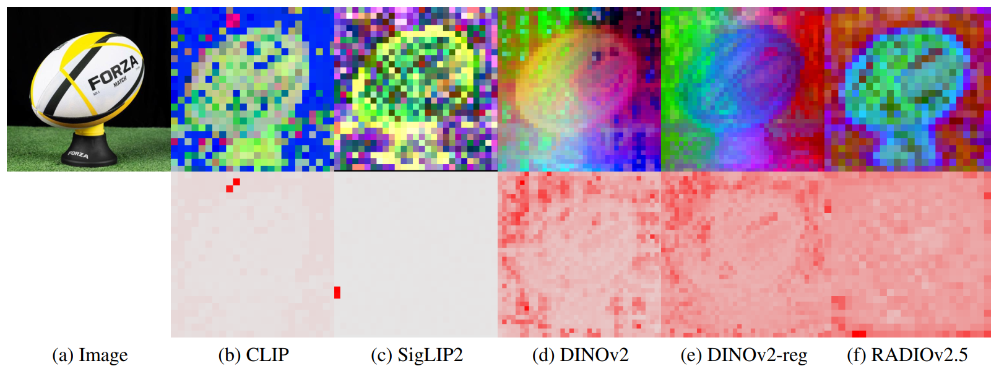

Establishing new Perception Level
We introduce a new perception level for MLLMs: moving from fixed patch grids to semantically meaningful regions. Compared with patch tokens, region tokens are more efficient at high resolution, better aligned with object-level reasoning, and easier to interpret through region-level attention.
We first show that visual token order is largely non-critical after visual encoding: shuffling post-encoder tokens causes minimal impact, while shuffling raw image patches before encoding significantly hurts performance. This indicates that spatial information is mainly carried by positional embeddings in the visual encoder, which enables flexible visual-token designs. Based on this, we formulate region-based representations with two steps: region partitioning and feature aggregation (e.g., average pooling). We further compare three region sources: segmentation-based regions (semantic but feature-agnostic), clustering-based regions (coherent but less semantic), and a hybrid strategy that refines segmentation masks with feature clustering to balance semantic grounding and feature consistency.

Are Region-Based Representations Better Alternatives?
We compare region-based representations with patch-based baselines and token-reduction methods across diverse benchmarks, while also examining interpretability and end-to-end efficiency. Overall, region-based representations are competitive alternatives: they maintain comparable performance, deliver more grounded and human-interpretable attention over meaningful entities, and significantly reduce visual computation.
| Visual Encoding | #Tokens | POPE | OCRBench | CV-Bench | MMStar | MMEPerception | MMECognition | MMBench | MM-Vet |
|---|---|---|---|---|---|---|---|---|---|
| CLIP | |||||||||
| Patch | 576 | 86.05 | 331 | 55.82 | 33.47 | 1500 | 300 | 66.84 | 32.1 |
| ToMe | 128 | 62.8 | - | - | - | 1088 | 255 | 53.3 | 27.2 |
| PruMerge+ | 128 | 81.5 | - | - | - | 1420 | - | 61.3 | 28.7 |
| SparseVLM | 128 | 85.0 | - | - | - | 1746* | 64.5 | 29.0 | |
| VisionZip | 128 | 83.7 | - | - | - | 1823* | 62.6 | 32.9 | |
| VisPruner (FasterVLM) | 128 | 84.6 | - | - | - | 1461 | - | 62.7 | 33.7 |
| Segmentation | 101 | 86.21 | 275 | 57.69 | 34.67 | 1414 | 320 | 65.38 | 29.7 |
| Clustering | 257 | 85.80 | 310 | 57.66 | 35.80 | 1493 | 306 | 66.84 | 29.6 |
| Combined | 139 | 85.48 | 288 | 57.24 | 33.73 | 1386 | 316 | 66.15 | 32.0 |
| SigLIP2 | |||||||||
| Patch | 729 | 85.99 | 405 | 60.03 | 35.27 | 1463 | 321 | 67.53 | 35.1 |
| Segmentation | 101 | 84.96 | 301 | 57.45 | 34.07 | 1441 | 311 | 65.81 | 33.3 |
| Clustering | 334 | 85.68 | 379 | 59.68 | 36.33 | 1542 | 324 | 69.67 | 35.8 |
| Combined | 142 | 85.40 | 335 | 59.63 | 33.40 | 1457 | 361 | 67.18 | 33.2 |
| RADIOv2.5 | |||||||||
| Patch | 576 | 85.82 | 315 | 56.92 | 36.00 | 1494 | 305 | 67.35 | 29.6 |
| Segmentation | 101 | 84.32 | 250 | 56.95 | 33.60 | 1394 | 327 | 64.60 | 25.7 |
| Clustering | 124 | 84.51 | 280 | 58.10 | 35.47 | 1456 | 350 | 65.38 | 26.7 |
| Combined | 134 | 84.76 | 264 | 59.35 | 33.27 | 1420 | 330 | 65.12 | 25.7 |
#Tokens denotes the average visual token count per image. Bold numbers indicate improvements over the corresponding patch-based baseline. Starred MME scores report the sum of perception and cognition scores.


We further find that the advantages are most evident on challenging tasks requiring fine-grained region/object-level understanding, such as OCR-like character recognition, symbolic reasoning, and 3D object-centric perception. In terms of efficiency, region-based designs substantially reduce FLOPs, and with modern VLM backbones (e.g., Qwen3-VL), they also translate into clear latency gains at higher resolutions. These results support our first finding: region-based representations are practical, interpretable, and scalable alternatives to fixed patch grids.
What is the Major Bottleneck in Region-Based Representations?
Our analysis identifies a key bottleneck: visual feature incoherency in the raw patch features produced by common visual encoders. Region-based aggregation assumes that nearby patches within the same semantic entity are locally consistent, but this assumption is often violated in practice.

We decompose this issue into two major factors: high-norm artifacts (outlier tokens that dominate aggregation and attention) and non-smoothness (adjacent patches with unexpectedly dissimilar features). Together, they can wash out fine-grained details and degrade region-level representations, especially for segmentation-driven grouping. This directly answers RQ2: improving feature coherency is the central challenge for making region-based MLLMs consistently superior.
How Can We Mitigate Feature Incoherency?
We study several complementary ways to reduce the impact of incoherent patch features: using more coherent visual encoders, normalizing raw features, choosing better region sources, and replacing fixed pooling with learnable aggregation. Among these, the most fundamental solution is to start from a visual encoder whose features are already better aligned with both language and local visual structure.

Agglomerative visual encoders such as RADIOv2.5 provide this balance by distilling from multiple teachers, combining language alignment from CLIP/SigLIP-style models with fine-grained perception from self-supervised and segmentation-oriented models. With smoother features, clustering produces fewer but more semantically coherent regions, and the hybrid segmentation-plus-clustering strategy becomes more effective.
Normalization offers a lightweight way to suppress high-norm artifacts before region aggregation, and it generally improves region-based representations, though it may trade off some information through rescaling. We also test a learnable cross-attention aggregator that attends from a pooled region query back to its patch features, but its gains are limited and inconsistent. Overall, our last finding is that better visual encoders are the most effective path to mitigating incoherency, while normalization, region-source design, and aggregation modules provide useful but more conditional improvements.